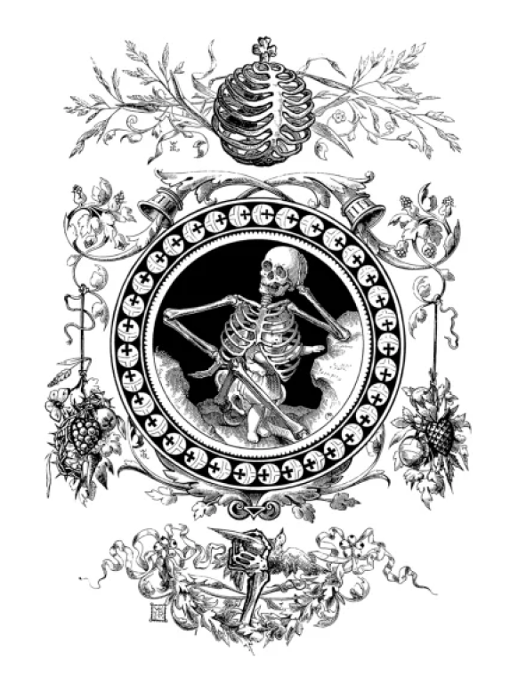
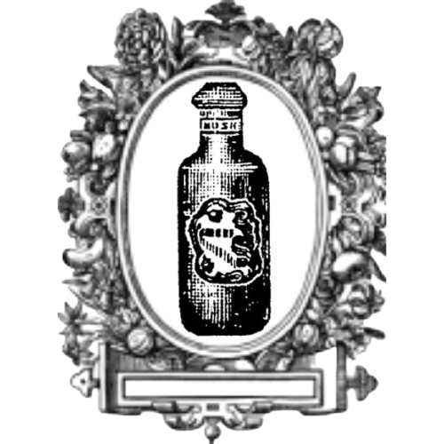
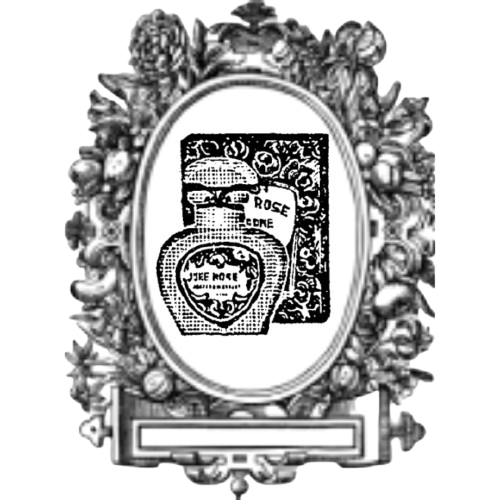
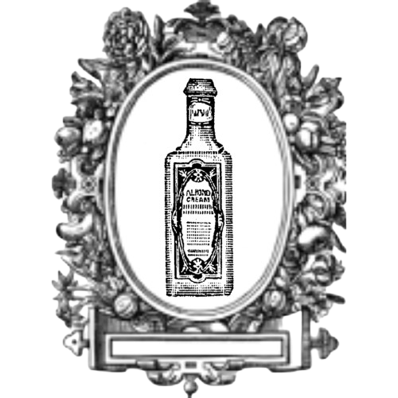

<!DOCTYPE html>
<html lang="en">
<head>
    <meta charset="UTF-8">
    <meta name="viewport" content="width=device-width, initial-scale=1.0">
    <title>Document</title>
    <link rel="preconnect" href="https://fonts.googleapis.com">
    <link rel="preconnect" href="https://fonts.gstatic.com" crossorigin>
    <link href="https://fonts.googleapis.com/css2?family=Ingrid+Darling&display=swap" rel="stylesheet">
    <link rel="stylesheet" href="./vanites.css">
    <script src="./vanites.js" defer></script>
</head>
<body>
    <header>
        <div id="espaço-da-logo">
            <a href="/" class="logo">Pn</a>
        </div>
        <nav>
            <a href="/" id="Naissance">Naissance</a>
            <a href="../biographie.html" id="Biographie">Biographie</a>
            <a href="../vanites.html"class="pagina-onde-estou" id="Vanites">Vanités</a>
            <a href="../murmureMoi.html" id="Murmure-moi">Murmure moi</a>
        </nav>
    </header>
    <main class="main3">
        
        
        <p class="titulo">Morelle Noire</p>
        <div class="espaço-do-texto">
            <p class="texto">Un parfum saisissant pour ceux 
                qui ont été soudainement 
                frappés par la mort. Aussi 
                surprenant que la mort ellemême, ce parfum s'adresse à 
                ceux qui souhaitent partager la 
                souffrance du défunt.</p>
        </div>
        
        <div class="espaço-dos-suportes-de-perfumes">
            
            
            
            
        </div>
    </main>
</body>
</html>